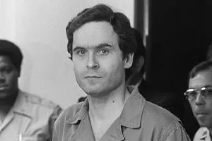
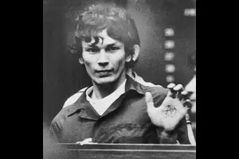
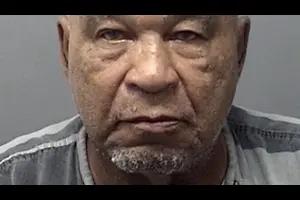
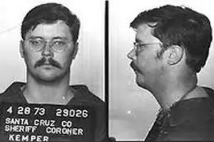
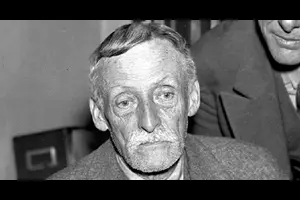

Les tueurs en série
Jeffrey Dahmer
Le cannibale de Milwaukee
Jeffrey Dahmer
Entre 1978 et 1991, Dahmer assassina 17 hommes à Milwaukee. Nécrophile et cannibale, il conservait les restes de ses victimes chez lui. Arrêté en 1991, il fut condamné à 957 ans de prison avant d'être tué par un codétenu en 1994.
Cliquez pour fermerTed Bundy

Lady Killer
Ted Bundy
Charismatique et séduisant, Bundy viola et tua au moins 30 jeunes femmes dans les années 70. Il s'évada deux fois de prison et se défendit lui-même lors de son procès. Exécuté sur la chaise électrique en Floride en 1989.
Cliquez pour fermerRichard Ramirez

Le Night Stalker
Richard Ramirez
Surnommé le Night Stalker, il sema la terreur en Californie en 1984-1985 : 14 meurtres, des dizaines d'agressions. Sataniste revendiqué, il souriait lors de son procès. Mort en prison d'un cancer en 2013.
Cliquez pour fermerSamuel Little

Le Picasso du crime
Samuel Little
Considéré comme le tueur en série le plus prolifique de l'histoire américaine avec 93 victimes confirmées. Ancien boxeur, il ciblait des femmes marginalisées. Arrêté à 72 ans, il passa ses dernières années à dessiner ses victimes de mémoire.
Cliquez pour fermerEd Kemper

L'Ogre de Santa Cruz
Ed Kemper
À 15 ans, il tua ses grands-parents. Libéré, il assassina 10 personnes dont sa propre mère. D'un QI de 145, il collabora ensuite avec le FBI pour définir le profil des tueurs en série. Toujours en vie, incarcéré en Californie.
Cliquez pour fermerDennis Rader
BTK Killer
Dennis Rader
Le BTK Killer ("Bind, Torture, Kill") tua 10 personnes au Kansas entre 1974 et 1991. Président de son église, père de famille modèle, il envoyait des lettres provocatrices à la police. Arrêté en 2005 grâce à une disquette qu'il avait lui-même envoyée.
Cliquez pour fermerAlbert Fish

Le vampire de Brooklyn
Albert Fish
Pédophile, meurtrier et cannibale sévissant dans les années 20-30, Fish avoua avoir abusé de centaines d'enfants. Il écrivit une lettre à la mère d'une de ses victimes décrivant ses actes. Exécuté à la chaise électrique en 1936.
Cliquez pour fermerMichel Fourniret
L'Ogre des Ardennes
Michel Fourniret
L'Ogre des Ardennes enleva, viola et tua au moins 9 jeunes femmes et filles entre 1987 et 2001, avec la complicité de son épouse Monique Olivier. Arrêté en 2003, il continua de révéler de nouvelles victimes jusqu'à sa mort en prison en 2021.
Cliquez pour fermerD'autres tueurs notables
Le Zodiaque
L'assassin non identifié qui terrorisa la Californie entre 1968 et 1969, laissant derrière lui des lettres cryptées non résolues à ce jour.
Les frères Menendez
Lyle et Erik Menendez, condamnés pour l'assassinat de leurs parents en 1989 dans leur villa de Beverly Hills.
Lizzie Borden
Accusée en 1892 du meurtre brutal de son père et de sa belle-mère à la hache. Acquittée, mais jamais vraiment innocentée.
Jack l'éventreur
Le tueur en série le plus célèbre de l'histoire, qui sema la terreur dans le quartier de Whitechapel à Londres en 1888. Son identité reste inconnue.
Youtubeurs True Crime
Ils décryptent les affaires les plus sombres pour nous...